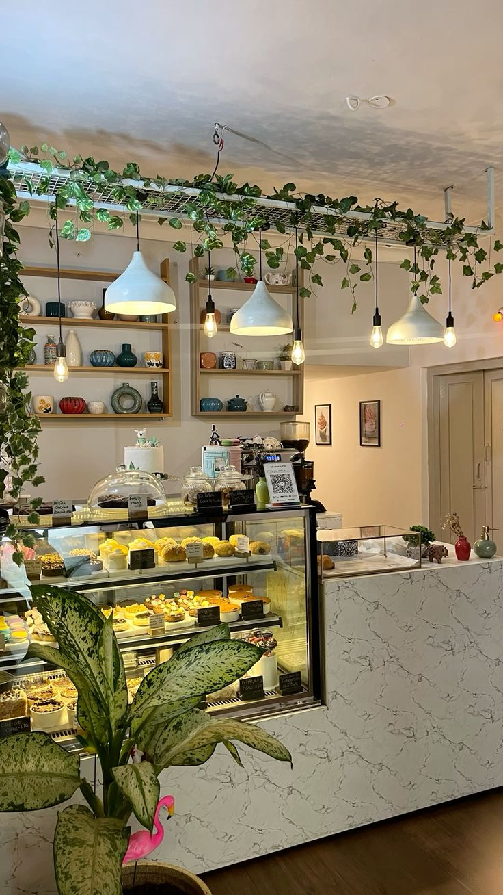
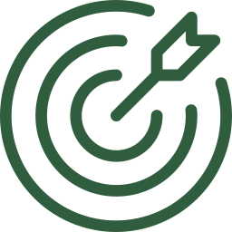
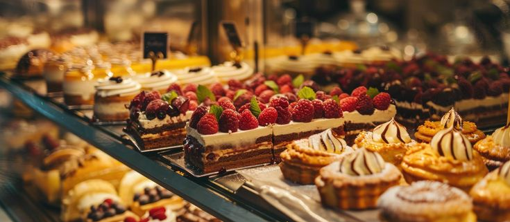

Vakery's nació en 2024 gracias a la iniciativa de cinco emprendedoras apasionadas por la repostería y la innovación.
Nuestro proyecto surgió con el objetivo de crear productos deliciosos y de alta calidad que brinden experiencias únicas
a nuestros clientes.
Desde nuestros inicios, hemos buscado combinar creatividad, sabor y responsabilidad, apostando por nuevas ideas que nos
permitan diferenciarnos. Además, creemos que el éxito de un negocio también implica cuidar el entorno que nos rodea, por
lo que trabajamos constantemente en la búsqueda de alternativas más ecológicas y sostenibles para reducir nuestro impacto
ambiental.
En Vakery's, cada creación refleja nuestro compromiso con la excelencia, la innovación y el respeto por el medio ambiente.


En Vakery's, nuestra misión es elaborar productos de repostería artesanal de alta calidad que combinen sabor, creatividad e innovación, brindando experiencias dulces e inolvidables a nuestros clientes. Nos comprometemos a utilizar ingredientes seleccionados y a desarrollar prácticas responsables que contribuyan al cuidado del medio ambiente.
Ser una repostería reconocida por su excelencia, innovación y compromiso con la sostenibilidad, convirtiéndonos en una marca referente para quienes buscan productos deliciosos, creativos y elaborados con responsabilidad. Aspiramos a crecer constantemente, inspirando a más personas a disfrutar de una repostería que combina calidad, emprendimiento y respeto por el planeta.
Somos una repostería artesanal dedicada a crear momentos dulces e inolvidables.

Cada producto es elaborado con dedicación y los mejores ingredientes.

Comprometidos con la excelencia en cada creación.

Productos horneados diariamente para garantizar frescura.
